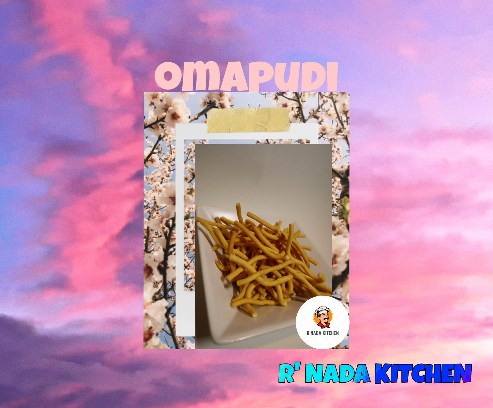
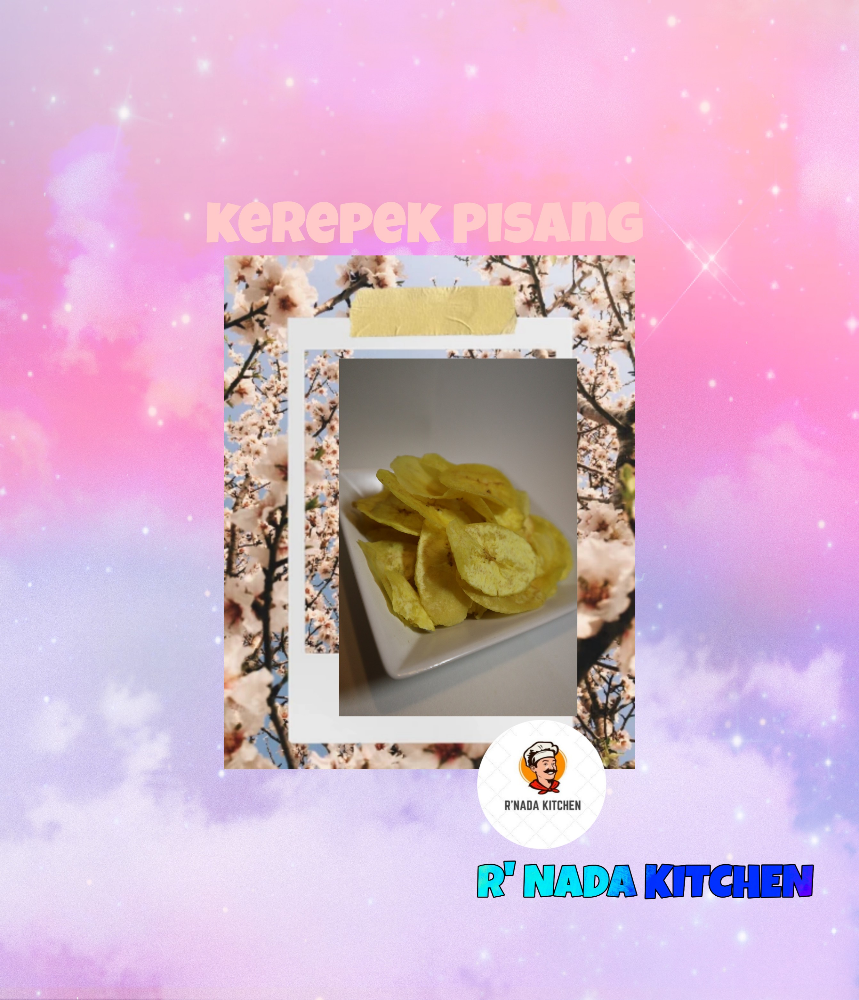
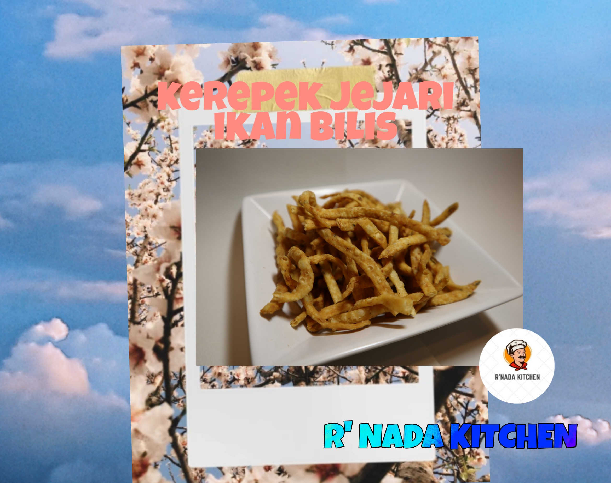

We are currently selling our traditional chips for munch munch. We tend to bring back the evergreen chips from the generation of our ancestors. You can buy all of our products through our Instagram or Website.

Omapudi or we often call it Muruku

All time favourite; Kerepek Pisang

You will like the test of our Kerepek Jejari Ikan Bilis